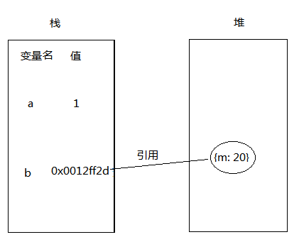
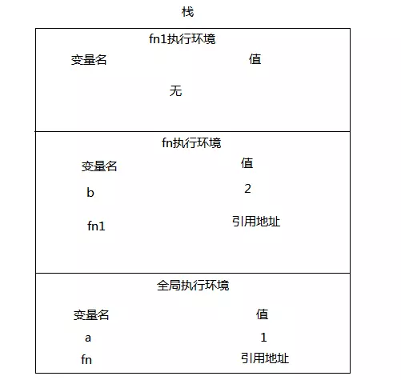
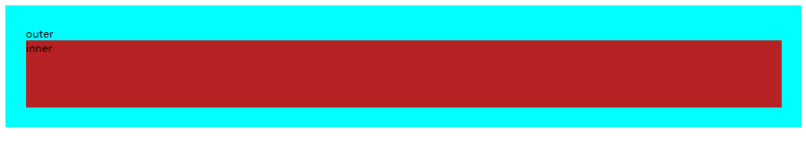
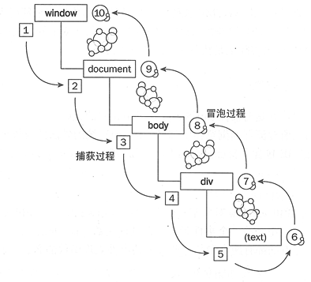
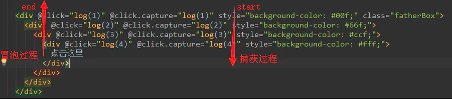
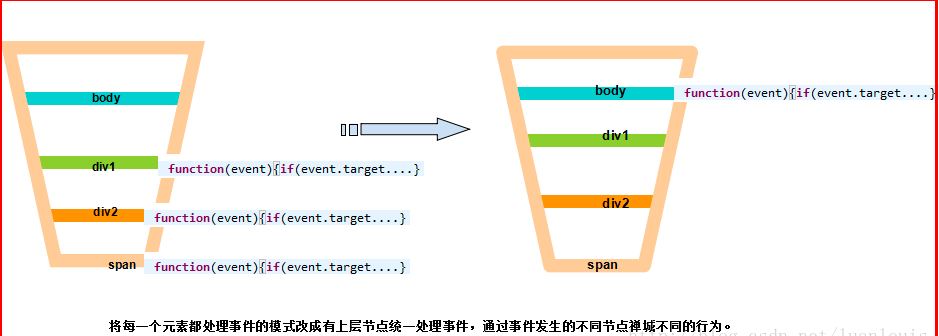

CONTENT OUTLINE
紧接
基础概念做一系列补充– 变量提升
– 作用域
– 闭包
– 立即执行函数表达式
– 异步任务队列
– 事件冒泡
一、变量提升
JS代码的运行规则
在JavaScript代码运行之前其实是有一个编译阶段的。编译之后才是从上到下，一行一行解释执行。变量提升就发生在编译阶段，它把变量和函数的声明提升至作用域的顶端。（编译阶段的工作之一就是将变量与其作用域进行关联）。
所以对于代码var a =2;来说，编译器看到的是两行代码var a; a = 2;第一个语句是声明语句，在编译阶段处理。第二个语句是赋值语句，在运行阶段处理。
变量提升
ES6之前我们一般使用var来声明变量，提升简单来说就是把我们所写的类似于var a = 123;这样的变量声明，提升到它所在作用域的顶端去执行，到我们代码所在的位置来赋值。
1 | function test () { |
上述代码a的结果是undefined，它的实际执行顺序如下：
1 | function test () { |
再看一个：
1 | a = 1; |
第一眼看到的时候会认为undefined, 但是记住声明会提升到作用域顶端
下面来看一道经典面试题：
1 | console.log(v1); |
输出的结果：
//undefined
//undefined
//200
//100
总结
变量提升需要注意两点：
- 提升的部分只是变量声明，赋值语句和可执行的代码逻辑还保持在原地不动
- 提升只是将变量声明提升到变量所在的变量范围的顶端，并不是提升到全局范围，说明如下：
1 | foo(); |
函数提升
Javascript中不仅仅是变量声明有提升的现象，函数的声明也是一样
具名函数的声明有两种方式： 函数声明式 函数字面量式
1 | //函数声明式 |
函数字面量式的声明和变量提升的结果是一样的，函数只是一个具体的值；
但是函数声明式的提升现象和变量提升略有不同
函数声明式
1 | console.log(bar); |
执行顺序相当于：
1 | function bar () { |
函数提升是整个代码块提升到它所在的作用域的最开始执行
函数字面量式
函数声明会提升，但是函数表达式不会提升。 看如下代码：
注意：变量提升和变量赋值 是两回事！
1 | foo(); |
处理方式如下：
1 | var foo; |
函数优先规则
思考下面的问题:
1 | foo(); //1 |
这就是函数优先规则
变量声明和函数声明都会得到变量提升，但函数声明会最先得到提升，然后是变量声明。
处理方式如下：
1 | function foo(){ |
注意：var foo;由于是重复声明变量，所以被编译优化去掉。
补充情况
1、对于函数声明来说，如果定义了相同的函数变量声明，后定义的声明会覆盖掉先前的声明，看如下代码：
1 | foo(); //输出3 |
2、JavaScript中是没有块级作用域的概念
1 | foo(); //输出结果为2 |
二、作用域
什么是作用域
作用域是在运行时代码中的某些特定部分中变量，函数和对象的可访问性。换句话说，作用域决定了代码区块中变量和其他资源的可见性。
1 | function outFun2() { |
从上面的例子可以体会到作用域的概念，变量 inVariable 在全局作用域没有声明，所以在全局作用域下取值会报错。我们可以这样理解：作用域就是一个独立的地盘，让变量不会外泄、暴露出去。也就是说作用域最大的用处就是隔离变量，不同作用域下同名变量不会有冲突。
ES6 之前 JavaScript 没有块级作用域,只有全局作用域和函数作用域。ES6 的到来，为我们提供了块级作用域，可通过新增命令 let 和 const 来体现。
全局作用域
在代码中任何地方都能访问到的对象拥有全局作用域，一般来说以下几种情形拥有全局作用域：
在代码中任何地方都能访问到的对象拥有全局作用域一般来说以下几种情形拥有全局作用域：
1、最外层函数和在最外层函数外面定义的变量拥有全局作用域
1 | var outVariable = "我是最外层变量"; //最外层变量 |
2、所有未定义直接赋值的变量，自动声明为拥有全局作用域
1 | function outFun2() { |
3、所有 window 对象的属性拥有全局作用域
一般情况下，window 对象的内置属性都拥有全局作用域，例如 window.name、window.location、window.top 等等。
全局作用域有个弊端：如果我们写了很多行 JS 代码，变量定义都没有用函数包括，那么它们就全部都在全局作用域中。这样就会污染全局命名空间, 容易引起命名冲突。
1 | // 张三写的代码中 |
这就是为何 jQuery、Zepto 等库的源码，所有的代码都会放在(function(){…})()中。因为放在里面的所有变量，都不会被外泄和暴露，不会污染到外面，不会对其他的库或者 JS 脚本造成影响。这是函数作用域的一个体现。
函数作用域
函数作用域，是指声明在函数内部的变量，和全局作用域相反，局部作用域一般只在固定的代码片段内可访问到，最常见的例如函数内部。
1 | function doSomething(){ |
作用域是分层的，内层作用域可以访问外层作用域的变量，反之则不行。
值得注意的是：块语句（大括号“｛｝”中间的语句），如 if 和 switch 条件语句或 for 和 while 循环语句，不像函数，它们不会创建一个新的作用域。在块语句中定义的变量将保留在它们已经存在的作用域中。
1 | if (true) { |
初学者经常需要花点时间才能习惯变量提升，而如果不理解这种特有行为，就可能导致bug 。正因为如此，ES6 引入了块级作用域，让变量的生命周期更加可控。
函数作用域有两种方式
1 | //函数声明 |
1 | //函数表达式 |
两者的区别在于它们的名称标识符会被绑定到何处，第一段代码中会被绑定到所在作用域中，第二段代码被绑定在函数表达式自身的函数中而不是所在作用域中。
块级作用域
ES6之前，在javascript中没有块作用域,也就是说在{...}中声明的变量会泄露到外面作用域
另外，ES5利用函数闭包，也可以模仿块级作用域
块级作用域可通过ES6新增命令 let 和 const 声明，所声明的变量在指定块的作用域外无法被访问。
let 声明的语法与 var 的语法一致。基本上可以用 let 来代替 var 进行变量声明，但会将变量的作用域限制在当前代码块中。
块级作用域在如下情况被创建：
- 在一个函数内部
- 在一个代码块（由一对花括号包裹）内部
块级作用域有以下几个特点：
1、声明变量不会提升到代码块顶部：let/const 声明并不会被提升到当前代码块的顶部，因此你需要手动将 let/const 声明放置到顶部，以便让变量在整个代码块内部可用。
1 | function getValue(condition) { |
2、禁止重复声明
如果一个标识符已经在代码块内部被定义，那么在此代码块内使用同一个标识符进行 let 声明就会导致抛出错误。
1 | var count = 30; |
在本例中， count 变量被声明了两次：一次使用 var ，另一次使用 let 。因为 let 不能在同一作用域内重复声明一个已有标识符，此处的 let 声明就会抛出错误。但如果在嵌套的作用域内使用 let 声明一个同名的新变量，则不会抛出错误。
1 | var count = 30; |
3、循环中的绑定块作用域的妙用
开发者可能最希望实现 for 循环的块级作用域了，因为可以把声明的计数器变量限制在循环内，例如：
1 | <button>测试1</button> |
我们要实现这样的一个需求: 点击某个按钮, 提示”点击的是第 n 个按钮”，结果点击任意一个按钮，后台都是弹出“第四个”，这是因为 i 是全局变量，执行到点击事件时，此时 i 的值为 3，最简单的方法是用 let 声明 i
1 | for (let i = 0; i < btns.length; i++) { |
三个简单案例
1 | var scope='global'; |
1 | var scope='global'; |
1 | var scope='global'; |
作用域链
作用域链本质上就是根据名称查找变量(标识符名称)的一套规则。
规则非常简单，在自己的变量对象里找不到变量，就上父级的变量对象查找，当抵达最外层的全局上下文中，无论找到还是没找到，查找过程都会停止。查找会在找到第一个匹配的变量时停止，被称为遮蔽效应
作用域其实是由执行上下文中的变量对象和作用域链共同构成的。
相关试题
1、说明：因为fn:function()中的活动对象只有全局的a
1 | var a = 10; |
2、说明：foo()中先查找自己的活动对象是否有a, 发现有，直接输出自己活动对象的a=1
1 | function foo() { |
3、这种情况与上面有点不同, value=2只有赋值没有定义，所以会被提升到最上面
1 | //var value = 2 |
4、函数体内函数声明会被提升
1 | function a(b){ |
等效于：
1 | function a(b){ |
三、闭包
1、什么是闭包？
闭包是指有权访问另外一个函数作用域中的变量的函数。可以理解为能够读取另一个函数作用域的变量的函数
1 | function outer() { |
很多人会搞不懂匿名函数与闭包的关系，实际上，闭包是站在作用域的角度上来定义的。
因为inner访问到outer作用域的变量，所以inner就是一个闭包函数。虽然定义很简单，但是有很多坑点，比如this指向、变量的作用域，稍微不注意可能就造成内存泄露。我们先把问题抛一边，思考一个问题：为什么闭包函数能够访问其他函数的作用域 ?
2、从堆栈的角度看待JS函数
基本变量的值一般都是存在栈内存中，而对象类型的变量的值存储在堆内存中，栈内存存储对应空间地址。基本的数据类型: Number 、Boolean、Undefined、String、Null。
1 | var a = 1 //a是一个基本类型 |
对应内存存储：

当我们执行 b={m:30}时，堆内存就有新的对象{m：30}，栈内存的b指向新的空间地址( 指向{m：30} )，而堆内存中原来的{m：20}就会被程序引擎垃圾回收掉，节约内存空间。我们知道js函数也是对象，它也是在堆与栈内存中存储的，我们来看一下转化：
1 | var a = 1; |

栈是一种先进后出的数据结构：
- 在执行fn前，此时我们在全局执行环境(浏览器就是window作用域)，全局作用域里有个变量a；
- 进入fn，此时栈内存就会push一个fn的执行环境，这个环境里有变量b和函数对象fn1，这里可以访问自身执行环境和全局执行环境所定义的变量
- 进入fn1，此时栈内存就会push 一个fn1的执行环境，这里面没有定义其他变量，但是我们可以访问到fn和全局执行环境里面的变量，因为程序在访问变量时，是向底层栈一个个找，如果找到全局执行环境里都没有对应变量，则程序抛出undefined的错误。
- 随着fn1()执行完毕，fn1的执行环境被杯销毁，接着执行完fn()，fn的执行环境也会被销毁，只剩全局的执行环境下，现在没有b变量，和fn1函数对象了，只有a 和 fn(函数声明作用域是window下)
在函数内访问某个变量是根据函数作用域链来判断变量是否存在的，而函数作用域链是程序根据函数所在的执行环境栈来初始化的，所以上面的例子，我们在fn1里面打印变量b，根据fn1的作用域链的找到对应fn执行环境下的变量b。所以当程序在调用某个函数时，做了以下的工作：准备执行环境，初始函数作用域链和arguments参数对象
我们现在看回最初的例子outer与inner
1 | function outer() { |
当程序执行完var inner = outer()，其实outer的执行环境并没有被销毁，因为他里面的变量a仍然被inner的函数作用域链所引用，当程序执行完inner(), 这时候，inner和outer的执行环境才会被销毁调
《JavaScript高级编程》书中建议：由于闭包会携带包含它的函数的作用域，因为会比其他函数占用更多内容，过度使用闭包，会导致内存占用过多。
3、闭包坑点
坑点1： 引用的变量可能发生变化
1 | function outer() { |
JS经典问题：打印结果不是1,2,3,4,...,10
因为每个闭包函数访问变量i是outer执行环境下的变量i，随着循环的结束，i已经变成10了，所以执行每个闭包函数，结果打印10， 10， ..., 10
解决方法：
1 | function outer() { |
坑点2： this指向问题
1 | var object = { |
坑点3：内存泄露问题
1 | function showId() { |
4、闭包技巧
技巧1： 用闭包解决递归调用问题
1 | function factorial(num) { |
技巧2：用闭包模仿块级作用域
es6没出来之前，用var定义变量存在变量提升问题；es6以后当然大多用es6的let 和const 定义
1 | for(var i=0; i<10; i++){ |
5、使用闭包的注意点
- 由于闭包会使得函数中的变量都被保存在内存中，内存消耗很大，所以不能滥用闭包，否则会造成网页的性能问题，在IE中可能导致内存泄露。解决方法是，在退出函数之前，将不使用的局部变量全部删除。
- 闭包会在父函数外部，改变父函数内部变量的值。所以，如果你把父函数当作对象（object）使用，把闭包当作它的公用方法（Public Method），把内部变量当作它的私有属性（private value），这时一定要小心，不要随便改变父函数内部变量的值。
6、补充
闭包的创建：
闭包就是可以创建一个独立的环境，每个闭包里面的环境都是独立的，互不干扰。
闭包会发生内存泄漏，每次外部函数执行的时候，外部函数的引用地址不同，都会重新创建一个新的地址。但凡是当前活动对象中有被内部子集引用的数据，那么这个时候，这个数据不删除，保留一根指针给内部活动对象。
在闭包的应用场景中，记住一句话：
闭包找到的是同一地址中父级函数中对应变量最终的值
参考案例
例一
1 | function funA(){ |
例二
1 | function outerFn(){ |
例三
1 | (function() { |
例四
1 | function f() { |
例五
1 | var add = function(x) { |
例六
1 | var lis = document.getElementsByTagName("li"); |
例七
1 | var fn=(function(){ |
例八
1 | function fun(n,o) { |
例九
1 | // 经典对比 |
四、立即执行函数表达式
1、函数声明和函数表达式
1.1 函数声明（函数语句）
- 使用 function 关键字声明一个函数，再指定一个函数名，叫函数声明。
- 【注意】JavaScript引擎规定，如果function关键字出现在行首，一律解释成函数声明语句
1 | // 函数声明 |
1.2 函数表达式 function expression
- 使用 function 关键字声明一个函数，函数名称可被省略，此种情况下的函数是 匿名函数（anonymous）。 函数名称只是函数体中的一个本地变量。
- 将匿名函数赋予一个变量，叫函数表达式，这是最常见的函数表达式语法形式。
1.3 匿名函数
1 | var myFunction = function() { |
- 命名函数表达式的好处是当我们遇到错误时，堆栈跟踪会显示函数名，容易寻找错误。
- 可以看到，上面的两个例子都不以function开头。不以function开头的函数语句就是函数表达式定义。
1.4 IIFE
但有时需要在定义函数之后，立即调用该函数（函数只使用一次）。这种函数就叫做立即执行函数，全称为立即调用函数表达式IIFE(Imdiately Invoked Function Expression)
2、立即调用函数表达式
立即调用函数表达式（IIFE）是一个在定义时就会立即执行的 JavaScript 函数。
（1）这是一个被称为 自执行匿名函数 的设计模式，主要包含两部分。第一部分是包围在 圆括号运算符() 里的一个匿名函数。
（2）第二部分再一次使用 () 创建了一个立即执行函数表达式，JavaScript 引擎到此将直接执行函数。
写法
（1）【最常用的两种办法】
1 | // 推荐使用 |
（2）【其他写法】
在Javascript里圆括号内不能包含语句，当解释器对代码进行解释的时候遇到圆括号就认为这里面是表达式，然后遇到function关键字就认为这是一个函数表达式，而不是函数声明。而更加奇妙的是只要是能将后面语句预先解释为表达式都可以，不一定是分分组操作符，于是立即执行函数表达式有了五花八门的写法，如下：
1 | (function () { counter1(); }()); |
作用
1、IIFE 中的匿名函数拥有 独立的词法作用域。这不仅避免了外界访问此 IIFE 中的变量，而且又不会污染全局作用域。（另一种说法 【构造一个函数作用域，防止污染全局变量】）
1 | (function() { |
2、 JavaScript 没用私有作用域的概念，如果是在多人开发的项目，你在全局或局部作用域中声明的变量，可能会被其他人不小心用同名的变量给 覆盖，根据JavaScript 函数作用域链的特性，使用这种技术可以模仿一个私有作用域，匿名函数作为一个“容器”，“容器”内部可以访问外部的变量，而外部环境不能访问“容器”内部的变量，所以 ( function(){…} )() 内部定义的变量不会和外部的变量发生冲突，俗称“匿名包裹器”或“命名空间”。
3、【注意】将 IIFE 分配给一个变量，不是存储 IIFE 本身，而是存储 IIFE 执行后返回的结果。
1 | var result = (function() { |
实例
假设有一个需求，每次调用函数，都返回加1的一个数字(数字初始值为0)
一般情况下，我们会使用全局变量来保存该数字状态
1 | var a = 0; |
自定义属性
但上面的方法中，变量a实际上只和add函数相关，却声明为全局变量，不太合适
因此，将变量a更改为函数的自定义属性更为恰当
1 | function add() { |
IIFE
其实这样做，还是有问题。有些代码可能会无意中将add.count重置
使用IIFE把计数器变量保存为私有变量更安全，同时也可以减少对全局空间的污染
1 | var add = (function() { |
五、异步任务队列 task queues
本文转载自 异步任务队列
本文是对于异步系列第一篇里提到的
evenloop模型中，所提到的任务队列(task queues)的展开分析以下代码均使用chrome浏览器运行 关于浏览器表现的差异在最后做补充
一个典型例子
1 | console.log('script start') |
根据之前说过的evenloop模型，首先输出script start和script end没有什么问题;
但是接下来却发现：
先执行了Promise指定的callback而不是setTimeout的callback。– Why？
两种任务队列
(microtask queue¯otask queue)
在之前讨论evenloop模型时，粗略提到了任务队列有2种类型:microtask queue和macrotask queue，他们的区别在于:
macrotask的执行：是在evenloop的每次循环过程，先取出macrotask queue中可执行的第一个（注意不一定是第一个，因为我们说过例如setTimeout可以指定任务被执行的最少延迟时间，当前macrotask queue的首位保存的任务可能还没有到执行时间，所以queue只是代表callback插入的顺序，不代表执行时也要按照这个顺序）。microtask的执行：在evenloop的每次循环过程之后,如果当前的执行栈(call stack)为空，那么执行microtask queue中所有可执行的任务
（某些文献内容中 直接把macrotask称为task,或者某些中文文章中把它们翻译成”微任务”和”宏任务”，含义都是相似的：macrotask或者task代表相对单独占据evenloop过程一次循环的任务，而microtask有可能在一次循环中执行多个）
现在回头来解析前面的例子：
- 第一次执行主函数，输出
script start - 遇到
setTimeout，将对应的callback插入macrotask queue - 遇到
promise，将对应的callback插入microtask queue - 输出
script end，主函数运行结束，执行栈清空，此时开始检查microtask queue，发现里面有可运行的任务，因此按顺序输出promise1和promise2 microtask queue执行完，开始新一轮循环，从macrotask queue取出setTimeout任务并执行，输出setTimeout- 结束，呈现上面的输出结果。
常见异步操作对应的回调函数任务类型如下：
- macrotask:
setTimeout,setInterval,setImmediate,requestAnimationFrame,I/O,UI rendering - microtask:
process.nextTick,Promises,Object.observe,MutationObserver
大概可以这样区分：和html交互密切相关的异步操作，一般是macrotasks；由emcascript的相关接口返回的异步操作，一般是microtasks
如何判断执行顺序
接下来看一个更复杂的例子，帮助理解不同异步任务的执行顺序
1 | <style> |
运行以上代码，可以在浏览器看到两个嵌套的div（如图）:

点击inner部分，打开chrome的调试器，可以看到console打出的结果是:
1 | click |
接下来分析运行过程 (建议打开chrome单步调试，进行观察分析)：
- 点击
inner,触发对应的onClick事件，此时inner对应的onClick函数进入执行栈； - 运行
console.log('click'),**输出(1)click**； - 运行
setTimeout,macrotask queue添加对应的console函数 - 运行
Promise，此时microtask queue添加对应的console函数 - 运行
outer.setAttribute,触发MutationObserver,microtask queue添加对应的console函数（前面注明了MutationObserver创建的回调任务类型是microtask） - 当前函数执行完毕，由于执行栈清空，此时开始调度
microtask queue，因此依次输出(2)promise和(3)mutate**，此时当前执行栈call stack和microtask queue均为空，但是macrotask queue里依然存储着两个东西–inner的Click触发的任务，以及先前setTimeout的回调函数。** - inner的
onclick函数虽然执行完毕，但是由于事件冒泡，紧接着要触发outer的onClick的执行函数，因此setTimeout的回调暂时还无法执行。 outer的onClick函数执行过程，重复前面的2-5步骤，因此输出(4)click(5)promise(6)mutate- 此时执行栈
call stack和microtask queue均为空，macrotask queue存储着两个setTimeout的回调函数。，根据evenloop模型，开始分别执行这两个task，于是输出了两个(7)和(8)timeout - 结束。
在充分理解上面例子的基础上，我们把**点击inner部分的这个操作，改成直接在js代码的末尾加上innner.click()**，请问结果是否一致呢？
先说最终结果:
1 | click |
由于是直接执行inner.click(),这次进入inner绑定的onclick函数时，与前面是有所不同的:
通过chrome调试器可以看到，此时的call stack有两层–除了onClick函数之外，还有一层匿名函数，这层函数其实就是最外层的script，相当于window.onload绑定的处理函数。
接下来分析本次的输出顺序：
- 重复前面例子中，步骤
2-5，输出一个(1)click inner的onClick函数执行完毕，但是这次执行栈并未清空，因为当前匿名函数还在执行栈里，因此无法开始调度microtask queue！！！（前面说过，microtask queue的调度必须在当前执行栈为空的情况下），因此，这时候会先进入冒泡事件触发的onClick- 类似的，输出
(2)clcik之后，promise的回调函数进入microtask queue - 运行
outer.setAttribute,触发MutationObserver,但是此时microtask queue无法再次添加对应的回调函数了，因为已经有一个存在的监听函数在pengding - 两个
onclick执行完毕，执行栈清空，接下来开始调度microtask queue,输出(3)promise(4)mutate``(5)promise - 此时当前执行栈
call stack和microtask queue均为空，macrotask queue存储着两个setTimeout的回调函数。根据evenloop模型，开始分别执行这两个task，于是输出了两个(6)和(7)timeout - 结束
这两个例子的对比，着重说明了一点:
–microtask queue存储的任务，必须要在当前函数执行栈为空时才会开始调度。
六、事件冒泡
相关概念
1、事件捕获
捕获型事件(event capturing)：事件从最不精确的对象(document 对象)开始触发，然后到最精确(也可以在窗口级别捕获事件，不过必须由开发人员特别指定)
2、事件冒泡
冒泡型事件：事件按照从最特定的事件目标到最不特定的事件目标(document对象)的顺序触发。
3、捕获和冒泡过程图

事件捕获和事件冒泡属于两个相反的过程
里可以有一个我感觉十分恰当的比喻，当你把一个可以漂浮在水面上的物品，使劲向水里砸下去，它会首先有一个下降的过程，这个过程就可以理解为从最顶层向事件发生的最具体元素（目标点）的捕获过程；之后由于浮力大于物体自身的重力，物体会在到达最低点（ 最具体元素）之后漂浮到水面上，这个过程相对于事件捕获是一个回溯的过程，即事件冒泡。
以click点击事件为例。假如我们有一个多层结构标签。如下图，是4个div嵌套。每个div都有点击的监听事件，分别输出1234。当我们点击最里面的div时，点击事件开始传递，传递的全过程是1-2-3-4-4-3-2-1。
前半部分，事件从最外面的父div依次传递到最里面的后代div，1-2-3-4这部分我们叫捕获过程。
之后事件又从最里层的后代div逐层传出，4-3-2-1这部分我们叫冒泡过程。
如果我把捕获监听器和冒泡监听器都加上，如下图这样。

添加两种监听的方法
在不使用任何框架的情况下，我们在js中通过addEventListener方法给Dom添加事件监听。
这个方法有三个参数可以传递addEventListener(event,fn,useCapture)。event是事件类型click，focus，blur等；fn是事件触发时将执行的函数方法（function）；第三个参数可以不传，默认是false，这个参数控制是否捕获触发。所以我们只传两个参数时，这个事件是冒泡传递触发的，当第三个参数存在且为true时，事件是捕获传递触发的。
使用框架时可使用对应的框架提供的方法。如上面我使用了Vue框架，通过事件装饰来区分捕获与冒泡。
阻止事件冒泡
完整代码
1 |
|
方法一
我们来考虑一个形象一点的情况：水中的一个气泡正在从底部往上冒，而你现在在水中，不想让这个气泡往上冒，怎么办呢？——把它扎破！没了气泡，自然不会往上冒了。类似地，对某一个节点而言，如果不想它现在处理的事件继续往上冒泡的话，我们可以终止冒泡：
在相应的处理函数内，加入 event.stopPropagation() ,终止事件的广播分发，这样事件停留在本节点，不会再往外传播了
1 | <script type="text/javascript"> |
方法二
事件包含最初触发事件的节点引用 和 当前处理事件节点的引用，那如果节点只处理自己触发的事件即可,不是自己产生的事件不处理。event.target 引用了产生此event对象的dom 节点，而event.currrentTarget 则引用了当前处理节点，我们可以通过这 两个target 是否相等。
比如span 点击事件，产生一个event 事件对象，event.target 指向了span元素，span处理此事件时，event.currentTarget 指向的也是span元素，这时判断两者相等，则执行相应的处理函数。而事件传递给 div2 的时候，event.currentTarget变成 div2，这时候判断二者不相等，即事件不是div2 本身产生的，就不作响应处理逻辑。
1 | <script type="text/javascript"> |
比较
从事件传递上看：方法一在于取消事件冒泡，即当某些节点取消冒泡后，事件不会再传递；方法二在于不阻止冒泡，过滤需要处理的事件，事件处理后还会继续传递；
优缺点：
方法一缺点：为了实现点击特定的元素显示对应的信息，方法一要求每个元素的子元素也必须终止事件的冒泡传递，即跟别的元素功能上强关联，这样的方法会很脆弱。比如，如果span 元素的处理函数没有执行冒泡终止，则事件会传到div2 上，这样会造成div2 的提示信息；
方法二缺点：方法二为每一个元素都增加了事件监听处理函数，事件的处理逻辑都很相似，即都有判断 if(event.target == event.currentTarget)，这样存在了很大的代码冗余，现在是三个元素还好，当有10几个，上百个又该怎么办呢？还有就是为每一个元素都有处理函数，在一定程度上增加逻辑和代码的复杂度。
我们再来分析一下方法二：方法二的原理是 元素收到事件后，判断事件是否符合要求，然后做相应的处理，然后事件继续冒泡往上传递；
既然事件是冒泡传递的，那可不可以让某个父节点统一处理事件，通过判断事件的发生地（即事件产生的节点），然后做出相应的处理呢？答案是可以的，下面通过给body 元素添加事件监听，然后通过判断event.target 然后对不同的target产生不同的行为。
将方法二的代码重构一下：结果会是点击不同的元素，只弹出相符合的提示，不会有多余的提示。
1 | <script type="text/javascript"> |
通过以上方式，我们把本来每个元素都要有的处理函数，都交给了其祖父节点body 元素来完成了，也就是说，span,div2,div1 将自己的响应逻辑委托给body，让它来完成相应逻辑，自己不实现相应逻辑，这个模式，就是所谓的事件委托。
下面是一个示意图：
